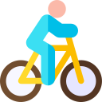

Harold - Tejada

181
27/04/1997 – Colombia

181
27/04/1997 – Colombia
182
16/02/2000 – Kazakhstan
183
09/05/1996 – Italia
184
07/06/1995 – Monaco
185
11/11/1999 – Eritrea
186
03/03/1995 – España
187
30/08/2003 – Italia
188
20/03/2002 – Italia